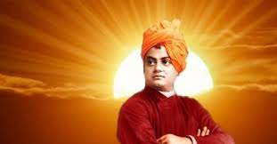
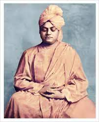

SWAMI VIVEKANANDA was one of the most famous and influential leaders of the Vedanta philosophy. He was the chief disciple of Rmakrishna Paramhansa and was the founder of the Ramakrishna Math and Ramkrishna Mission. Many consider him an Icon for his fearless courage, his possitive exhortation to the youth, his broad outlook on social problems and countless lectures and discourses on vedanta philosophy.
The book written by him are very influential and still seen as fundamental texts for any intersted in the Hindu practice of yoga. His letters are of great literary and spiritual value. He was also very good singer and a poet. He had composed many songs including godess, kali the Mother. He used humour for his teachings.His language is very free flowing. His own bengali writings stand stand testimony to the fact that he believed that words- spoken or written should be for making things easier to understand rather than shoe off the speaker or writer's knowledge.
IN fitting irony , swamiji died or went in ultimate meditation (SAMADHI)on July 4, 1902 at the age of 39.Swamiji preached strenght, freedom, manliness and that every soul is divine , he touched the hearts and minds, and changed the lives of many thousands of men and women around the world.
